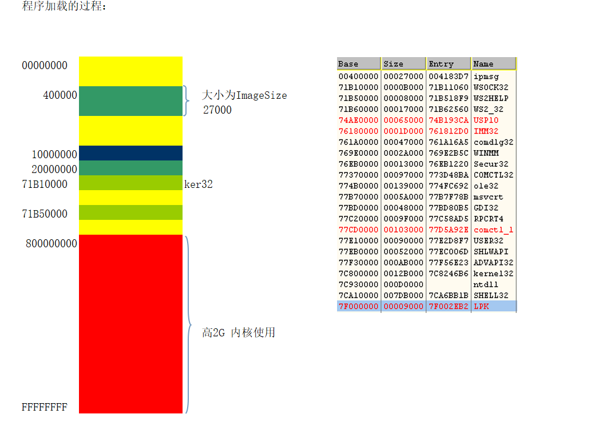

# 程序加载的过程
程序从 FileBuffer 转换成 ImageBuffer.

特别说明：
1、由于一般情况.exe 运行时被第一个加载，所以 exe 文件一般没有重定位表，但是不代表所有 exe 都没有重定位表.
2、为了提高搜索的速度，模块间地址也是要对齐的 模块地址对齐为 10000H 也就是 64K
# 何为重定位
重定位的意思就是修正偏移的意思。如一个地址位 0x401234 ,Imagebase = 0x400000 . 那么 RVA 就是 1234. 如果 Imagebase 变了成了 0x300000, 那么修正之后就是 ImageBase + RVA = 0X300000+1234 = 0x301234
首先我们知道。一个 EXE 文件。会调用很多 DLL (PE) 有多个 PE 文件组成.
exe 文件启动的基址 (ImageBase) 是 0x40000. 假设我们调用三个 DLL A B C
A DLL 在 EXE 展开的基址位置是 0x10000000
那么恰巧 B DLL 展开的位置也是 0x1000000 两个 DLL 位置展开地方是一样的。那么就出现问题了
如下图：
这时候操作系统就会给我们进行修正。将 B DLL 换个内存位置，进行展开。
如下图: B DLL 从 0x2000000 展开了，规避了使用相同地址
虽然这样解决了入口基址不一样。内存展开不一样。但是我们知道.PE 文件中有很多 RVA .RVA 是相对于 ImageBase 的偏移进行存放的。如果 PE 文件中都是 RVA 那就好办了.
但是不一定呀.
打开一个程序，观察一下全局变量的反汇编
00401D58 A1 44 CA 42 00 mov eax,[x (0042ca44)]
00401D5D 50 push eax
00401D5E 68 EC 91 42 00 push offset string "%d\n" (004291ec)
00401D63 E8 28 62 00 00 call printf (00407f90)
编译时生成的地址 = ImageBase + RVA
这个地址在程序编译完成后，已经写入文件了。
那假设，程序在加载的时候，没有按照预定的 400000 载入到指定的位置
但程序执行的时候，仍然会按照 0042ca44 和 004291ec 的地址去使用这个值！
1、也就是说，如果程序能够按照预定的 ImageBase 来加载的话，那么就不需要重定位表
这也是为什么 exe 很少有重定位表，而 DLL 大多都有重定位表的原因
2、一旦某个模块没有按照 ImageBase 进行加载，那么所有类似上面中的地址就都需要修正，否则，引用的地址就是无效的.
3、一个 EXE 中，需要修正的地方会很多，那我们如何来记录都有哪些地方需要修正呢？
答案就是重定位表
# 为什么要用重定位表
上面的例子已经解释的很清楚了，总述一下。
程序编译时每个模块有一个优先加载地址 ImageBase, 这个值是连接器给出的，因此连接器生成的指令中的地址是在假设模块被加载到 ImageBase 前提之下生成的，那么一旦程序没有将模块加载到 ImageBase 时，那么程序中 的指令地址就需要重新定位。
例如：假设一个可执行文件，基址是 0x400000, 在这个 image 偏移 0x1234 处是一个指针，指向一个字符串，字符串始于实际地址 0x404002 处，所以指针应该是 0x404002, 加载文件时，由于种种原因，加载器决定把他加载到 0x600000 处，连接器假设的地址和实际的地址之差成为 delta, 上例 delta 为 0x200000，整个位置提高了 0x200000, 那么字符串位置应该为 0x604002, 原来指向字符串的指针就错误了，所以要把 delta 加到指针值中，为了让加载器有这样的能力做调整，可执行文件内含许多个【基址重定位项】，给那些存放指针的位置使用，加载器必须把 delta 加载到各个基址上。
本例中应该把 0x200000 加给原来的指针值，0x404002, 并将 0x604002 写回原处。
# 重定位表解析
# 重定位表位置
数据目录项的第 6 个结构，就是重定位表.
typedef struct _IMAGE_DATA_DIRECTORY { | |
DWORD VirtualAddress; | |
DWORD Size; | |
} IMAGE_DATA_DIRECTORY, *PIMAGE_DATA_DIRECTORY; | |
// 上面 VirtualAddress 存储的地址 指向的就是_IMAGE_BASE_RELOCATION 结构体 | |
typedef struct _IMAGE_BASE_RELOCATION { | |
DWORD VirtualAddress; | |
DWORD SizeOfBlock; // 表示了一个重定位块有多大 | |
} IMAGE_BASE_RELOCATION; | |
typedef IMAGE_BASE_RELOCATION ，* PIMAGE_BASE_RELOCATION; |
看着重定位表就两个成员。其实非常复杂。我们设 VirtualAddress 为 X 设 SizeofBlock 为 Y
如下图所示，一个格子为 1 个字节.
第一行四个字节为 X, 也就是 Virtualaddress。
第二行则是 Y，SizeOfBlock 的值。
我们知道一个 PE 文件需要很多地方进行重定位的。比如记录重定位块多大的 SizeOfBlock 的大小为 16. 也就是两个重定位块，那么第一个重定位表的大小就是如下图
第二个重定位表如果 SzieofBlock 大小为 20 个字节。那么重定位表大小就是 20 个字节
由于重定位表的 SizeOfBlock 大小不确定，新的 Block 的重定位信息的结构体接着上一个 Block4 字节对齐后开始，而当出现一个_IMAGE_BASE_RELOCATION 结构体的值全为 0 时，表明重定位表结束。
# 重定位表的结构
在 SizeBlock 后面紧跟着的就是一个 TypeOffset 数组，一个大小是 2 字节，其中高 4 位代表修正的类型，低 12 位是修正的偏移。它的大小与 VirtualAddress 相加就是要修正的 RVA 地址。当出现一个_IMAGE_BASE_RELOCATION 结构体的值全为 0 时，表明重定位表结束。
TypeOffset 高 4 位的可能取值：
需要首先进行说明的是，重定位表的 RVA 指向的位置是一个数组，里面的元素都是 IMAGE_BASE_RELOCATION，每个 IMAGE_BASE_RELOCATION 只负责 4KB 大小分页内的重定位信息。因此结构中的 VirtualAddress 总是 0x1000 的倍数。
因为 16 位的二进制数就可以表示一个分页（4KB）的任何位置，而 WORD 恰好就是 16 位
真正的重定位表结构
typedef struct _IMAGE_BASE_RELOCATION | |
{ | |
DWORD VirtualAddress; | |
DWORD SizeOfBlock; | |
//WORD TypeOffset[1]; | |
}IMAGE_BASE_RELOCATION; | |
struct | |
{ | |
WORD Offset:12; // 这是表示 Offset 有 12 位 | |
WORD Type:4; // 这是表示 Type 有 4 位 | |
}TypeOffset; | |
//Offset: 低 12 位，上面介绍过，它跟 VirtualAddress 相加就是完整的重定位 RVA | |
//Type: 重定位信息的类型，有如下类型: | |
#define IMAGE_REL_BASED_ABSOLUTE 0 // 无重定位操作，用于 4 字节对齐 | |
#define IMAGE_REL_BASED_HIGH 1 // 重定位指向位置的高 2 个字节需要被修正 | |
#define IMAGE_REL_BASED_LOW 2 // 重定位指向位置的低 2 个字节需要被修正 | |
#define IMAGE_REL_BASED_HIGHLOW 3 // 重定位指向位置的全部 4 个字节需要被修正（绝大多数都是这种情况） | |
#define IMAGE_REL_BASED_HIGHADJ 4 // 需要两个 TypeOffset 配合完成索引 | |
#define IMAGE_REL_BASED_MACHINE_SPECIFIC_5 5 //... | |
#define IMAGE_REL_BASED_RESERVED 6 // 保留 | |
#define IMAGE_REL_BASED_MACHINE_SPECIFIC_7 7 //... | |
#define IMAGE_REL_BASED_MACHINE_SPECIFIC_8 8 //... | |
#define IMAGE_REL_BASED_MACHINE_SPECIFIC_9 9 //... | |
#define IMAGE_REL_BASED_DIR64 10 // 重定位指向位置的 8 个字节需要被修正 |
# 计算重定位后的地址
重定位后的地址 = (加载基址 - ImageBase) + 重定位前的地址
# 定位数据的公式
# 需要重定位的数据位置
有如下公式：
需要重定位的数据位置 = ImageBase + VirtualAddress + TypeOffset低12位
实例
如图，其中程序的 ImageBase 是 0x10000000，VirtualAddress 是 0x1000, 低 12 位 Offset 是 0x11F，高四位 Type 是 0x3.
需要重定位的数据位置 = 0x10000000 + 0x1000 + 0x11F = 0x1000111F
# 重定位表中记录的重定位信息的个数
可以通过下面的公式进行计算：
重定位个数 = (SizeOfBlock - 8(IMAGE_BASE_RELOCATION的大小)) / 2(每个TypeOffset是2个字节)总重定位个数 = 所有IMAGE_BASE_RELOCATION结构体相加后的重定位个数
还是以上图为例
重定位个数 = (0x118 - 8) / 2 = 0x88 = 136 (十进制)
# 滴水课件
解析说明：
1、通过 IMAGE_DATA_DIRECTORY 结构的 VirtualAddress
属性 找到第一个 IMAGE_BASE_RELOCATION
2、判断一共有几块数据：
最后一个结构的 VirtualAddress 与 SizeOfBlock 都为 0
3、具体项 宽度：2 字节
也就是这个数据
内存中的页大小是 1000H 也就是说 2 的 12 次方 就可以表示
一个页内所有的偏移地址 具体项的宽度是 16 字节 高四位
代表类型：值为 3 代表的是需要修改的数据 值为 0 代表的是
用于数据对齐的数据，可以不用修改。也就是说 我们只关注
高 4 位的值为 3 的就可以了.
4、VirtualAddress 宽度：4 字节
当前这一个块的数据，每一个低 12 位的值 + VirtualAddress 才是
真正需要修复的数据的 RVA
真正的 RVA = VirtualAddress + 具体项的低 12 位
5、SizeOfBlock 宽度：4 字节
当前块的总大小
具体项的数量 = (SizeOfBlock - 8)/2
# 重定位表的利用
- 破解
壳 写加密壳的时候，要先把重定位表移走。数据目录中的表是分散在各个节里的，如果对节进行加密，操作系统找不到表，就无法加载程序。因此加密前要先把表移动到新的节里。
- 辅助
对抗 HOOK，内核重载时。
# Reference
https://www.cnblogs.com/iBinary/p/9742670.html
https://blog.csdn.net/Apollon_krj/article/details/77370452
https://blog.csdn.net/qq_40890756/article/details/90080880
https://blog.csdn.net/tutucoo/article/details/83828713